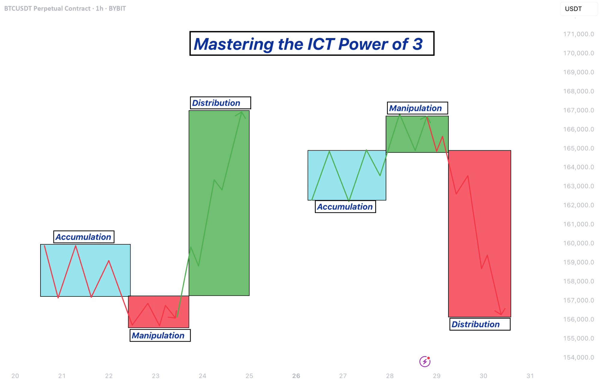

⚡ Power of 3 (PO3) Trading Model
The 3-step institutional model — Accumulation, Manipulation, Distribution — and how to trade with smart money.
📋 Table of Contents
📌 PO3 Overview


The market usually follows three steps:
- 1️⃣ Accumulation
- 2️⃣ Manipulation
- 3️⃣ Distribution
📦 Phase 1 — Accumulation
This phase happens when institutions are building positions quietly.
Characteristics:
- Tight sideways range
- Low volatility
- Small candles
- No clear direction
Retail traders often think:
"Nothing is happening."
But institutions are preparing for a big move.
Typical location:
- Overnight range
- Asian trading session
- Pre-market consolidation
🎭 Phase 2 — Manipulation (Stop Hunt)
This is where the market traps traders.
Characteristics:
- Sudden breakout above or below range
- Liquidity sweep
- Stop losses triggered
- Quick reversal
Example:
Retail traders buy →
Market reverses →
Stops get hit.
This phase is also called:
Liquidity Grab / Stop Hunt
🚀 Phase 3 — Distribution (Real Move)
After the trap, the real move begins.
Characteristics:
- Strong trend
- Large momentum candles
- Institutional participation
This is where traders should ride the move.
Example:
Then strong sell-off →
Distribution downward trend.
🕐 Example of PO3 in Intraday Trading
Typical day structure:
Morning:
Accumulation — Small range forms.
Late morning:
Manipulation — Fake breakout occurs.
Afternoon:
Distribution — Strong trend move begins.
🎯 How to Trade PO3
Step 1 — Identify the range
Mark:
- Asian session high/low
- Previous day high/low
- Pre-market range
Step 2 — Wait for liquidity sweep
Look for:
- Break above range
- Break below range
- Stop hunt candle
Step 3 — Wait for confirmation
Confirmation signals:
- Market structure shift
- Strong momentum candle
- Reversal pattern
Step 4 — Enter pullback
Entry happens after:
- Liquidity sweep
- Structure shift
- Pullback
Stop loss: Above sweep high or below sweep low.
Target: Next liquidity zone.
🧠 Why PO3 Works
Markets need liquidity to move.
Institutions create liquidity by:
- Triggering breakout traders
- Hitting stop losses
- Creating panic
Then they move the market in the real direction.
🔄 Retail vs Smart Money
Retail traders:
- Trade breakouts
- Enter during manipulation
Smart money traders:
- Wait for manipulation
- Enter during distribution
⭐ Perfect Trade Setup Using PO3
Best setup combines everything you learned:
This aligns with:
- Institutional trading behavior
- Price action
- Liquidity concepts
🌍 Best Markets for PO3
Works extremely well on:
- BTC / Crypto
- Nifty / BankNifty
- Forex majors
- NASDAQ / US indices
Best timeframes:
- 5m
- 15m
🚨 One Important Rule
Never trade the first breakout of the day.
Very often it is the manipulation phase.